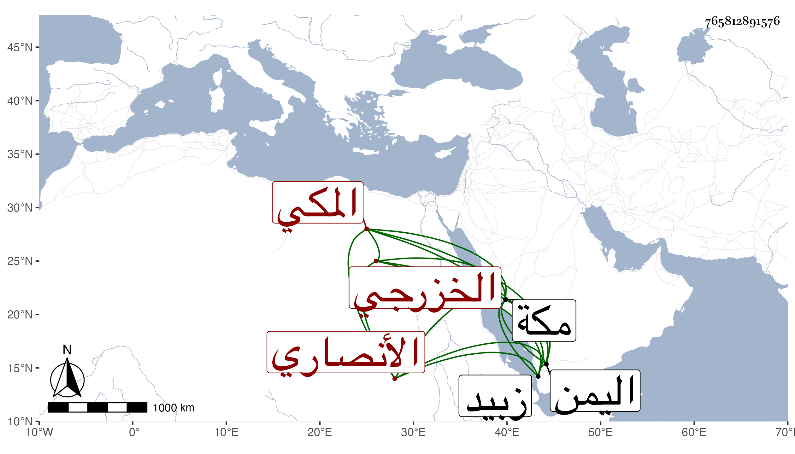

0902Sakhawi.DawLamic.ITO20230111-ara1.EIS1600.765812891576
Biography ID: 765812891576
419
أبو الفضل بن محمد بن أحمد بن عبد الله بن محمد بن عبد المعطي الكمال الأنصاري الخزرجي المكي ويعرف بابن الصفي لكون أبيه كان سبط الصفي الطبري . سمع من والده والعز بن جماعة والحسن بن عبد العزيز الأنصاري وأجاز له جماعة وحدث وكان يعمل العمر ويبيعها ويتردد من مكة إلى اليمن حتى أدركه الأجل بزبيد في سنة أربع عشرة ذكره الفاسي .
